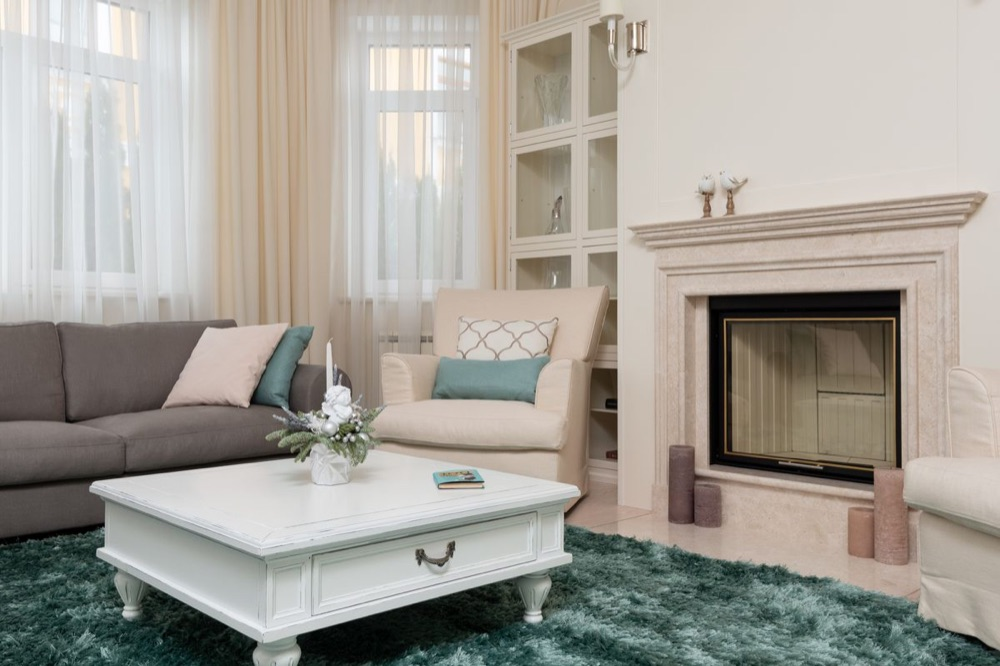
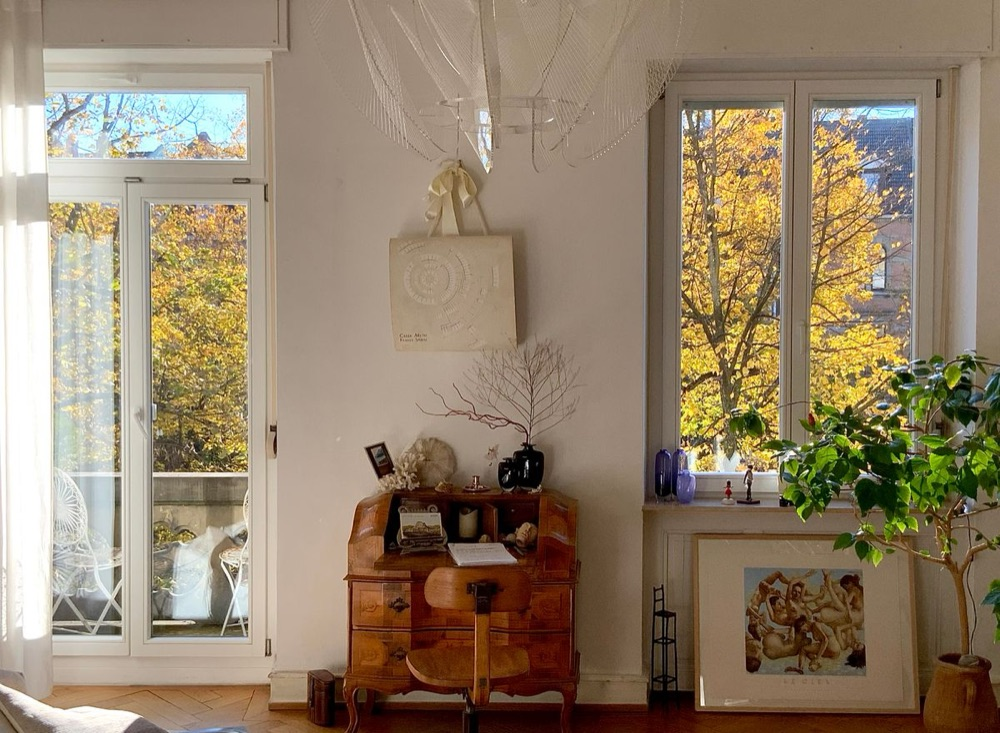
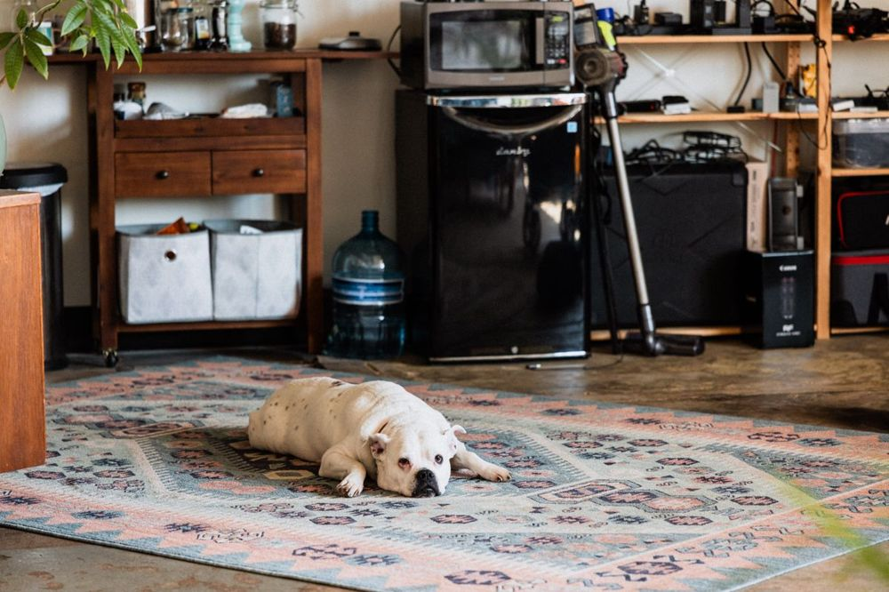

Carpet Cleaning
Professional carpet cleaning for bedrooms, living rooms, hallways, stairs, basements, and high-traffic areas.
BluePeak Cleaning Co. provides reliable carpet cleaning, upholstery cleaning, mattress cleaning and sanitizing, area rug cleaning, stain removal, pet odor treatment, mattress cleaning and sanitizing, and commercial carpet cleaning services for homes and small businesses in Bethany and nearby areas of New Haven County.
When your carpets, stairs, area rugs, or upholstered furniture start to show dirt, traffic lanes, spots, or everyday odors, BluePeak Cleaning Co. is ready to help. Our carpet cleaning service in Bethany, CT is designed for homeowners who want a cleaner, fresher, and more comfortable home without the stress of doing it themselves.
We clean common household surfaces such as wall-to-wall carpets, bedroom carpets, living room carpets, hallway carpets, stair carpets, area rugs, sofas, sectionals, dining chairs, accent chairs, and cushions. Whether you need a full carpet refresh or focused upholstery cleaning in Bethany, our team brings a professional approach and detail-focused care.
Professional cleaning services for carpets, upholstery, area rugs, commercial spaces, sofas, pet odors, stains, and mattresses.
BluePeak Cleaning Co. serves customers looking for carpet cleaners near Bethany, upholstery cleaning near Bethany, sofa cleaning, sectional cleaning, stain removal, pet odor treatment, and area rug cleaning. Our goal is to make your home feel fresher, cleaner, and more comfortable.
Call (203) 419-5278 to request a free estimate for carpet cleaning or upholstery cleaning in Bethany, Connecticut.
Local guides written specifically for Bethany, CT homeowners.

Carpet cleaning in Bethany, CT typically costs between $30 and $80 per room, or roughly $0.25 to $0.45 per square foot, depending…
Read more →
Early fall and late spring are generally the best times to schedule carpet cleaning in Bethany, CT, since both seasons offer…
Read more →
Pet odor removal in Bethany, CT homes works best when it targets the source of the smell, not just the surface. Once urine or pet…
Read more →BluePeak also serves nearby Connecticut cities.
Call BluePeak Cleaning Co. today for a free estimate.